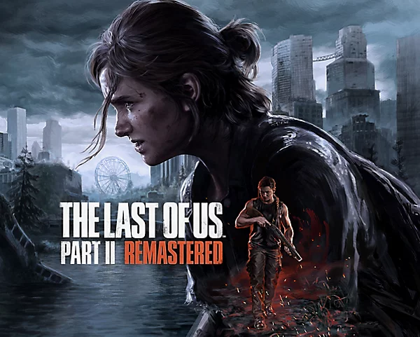
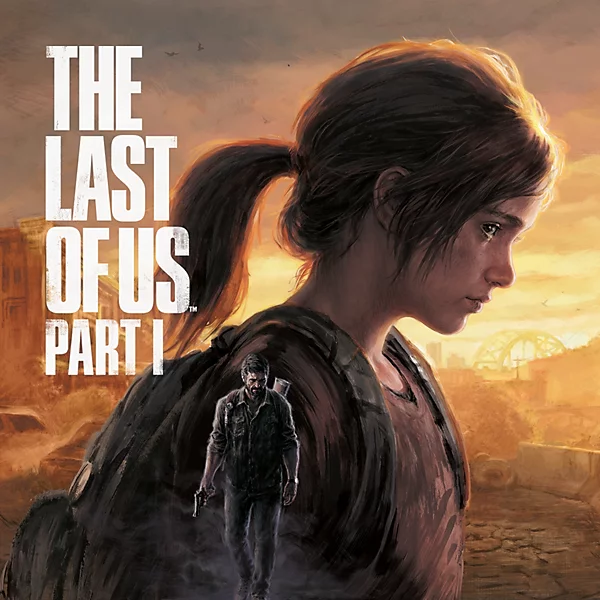
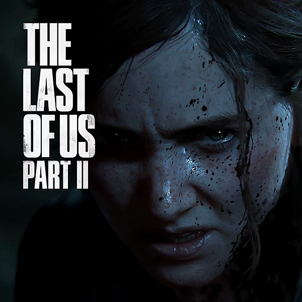
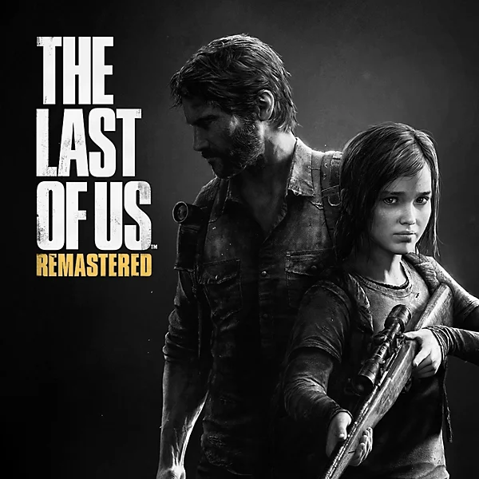
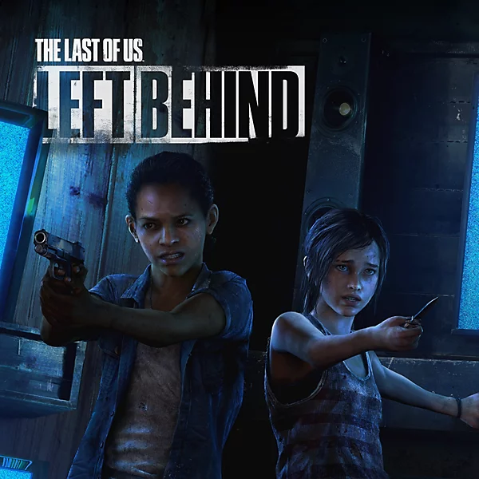
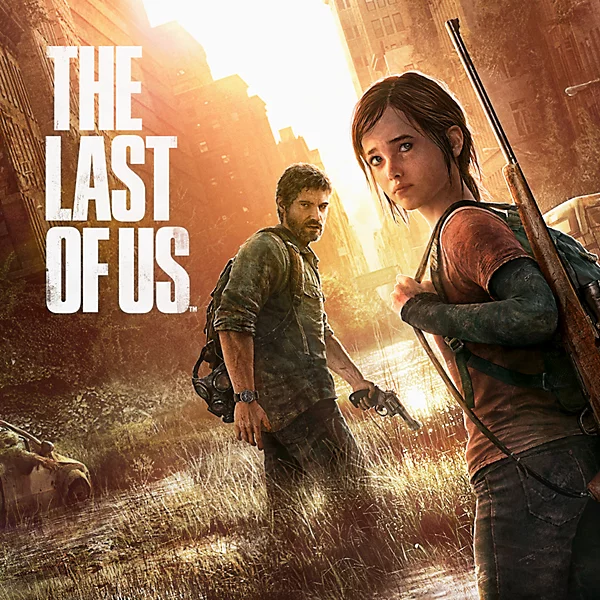

The Last Of Us Parte II Remastered
Viva as jornadas emocionais de Ellie e Abby com um visual repaginado e desempenho melhorado, além de perspectivas sobre a criação do jogo. Já disponível no PS5® e no PC.
Lançado em 19 de junho de 2020, The Last of Us Part II é um jogo de ação e sobrevivência desenvolvido pela Naughty Dog. A história acontece cinco anos após os acontecimentos do primeiro jogo, quando Ellie e Joel vivem em uma comunidade de sobreviventes em Jackson, Wyoming.
Após um acontecimento violento mudar completamente sua vida, Ellie parte em uma jornada em busca de justiça e vingança. Durante sua viagem, ela enfrenta diferentes grupos de sobreviventes, infectados e situações perigosas, enquanto precisa lidar com as consequências de suas próprias escolhas.
A história também apresenta novos personagens e diferentes pontos de vista, explorando temas como perda, violência, vingança, amor e perdão. O jogo faz o jogador questionar quem está certo ou errado e mostra como as ações de cada personagem podem afetar outras pessoas.
Além da narrativa, The Last of Us Part II possui uma jogabilidade focada em combate, furtividade e sobrevivência. O jogador pode utilizar armas, itens e diferentes habilidades para enfrentar os perigos encontrados durante a jornada, passando por ambientes como as montanhas de Jackson e as ruínas de Seattle.
The Last of Us Part II é uma experiência que combina uma história emocional com exploração, ação e sobrevivência, apresentando uma das jornadas mais marcantes da personagem Ellie.

Viva as jornadas emocionais de Ellie e Abby com um visual repaginado e desempenho melhorado, além de perspectivas sobre a criação do jogo. Já disponível no PS5® e no PC.

Resista e sobreviva. Reviva o aclamado jogo que deu início a tudo, totalmente recriado para o console PlayStation®5 e agora disponivel para PC.

Confronte as devastadoras repercussoes fisicas emocionais de cada acao da Ellie.

Vencedor de mais de 200 prêmios de Jogo do Ano, The Last of Us foi recriado para o sistema PlayStation®4.

The Last of Us: Left Behind mistura sobrevivencia, lealdade e amor em um jogo tenso de acao num capítulo aclamado pela crítica.

Jogue como Joel, um contrabandista com a tarefa de escoltar a adolescente Ellie pelo território pós- apocalíptico dos Estados Unidos.
Viva desde o início os premiados jogos que inspiraram a serie de TV, com as edicões definitivas dessas duas historias memoraveis oferecidas em conjunto pela primeira vez em uma coleção completa.